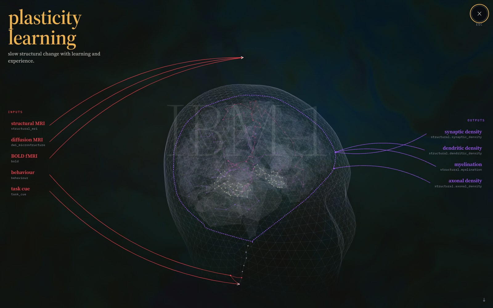

One Declaration, Forty-Four Models
Fields carry physical state on a support, topologies say which state may interact, and processes are dynamics over a topology. A model names regions, a resolution and a bandwidth; dependency tracing instantiates only what that request actually reaches, so the same field can sit at 1 mm across the brain and 50 µm around one electrode.
M = materialize(R, r, B, F, A, T, P)
eeg_forward read off its request. What lights up is what the trace instantiates; the rest of the brain is never built.64-Channel EEG to Visual Thought Decoding
- 63.5%top-1 retrieval over the designated test set, 200 images, median rank 1 — 127× chance.
- 48.4× → 1.00×through the sheet to a precentral-only readout with ports verified disjoint, against a severed sheet.
- 8.69% → 0.44%when the optic nerve port is displaced to a random region of equal size.
Control: a dynamics-free encoder, selected the same way, matches this. The substrate is load-bearing inside the model; it has not beaten a purpose-built baseline.
Speech Tracking and Sleep Oscillation Dynamics
- 1.000 Hzslow oscillation, ± 0.296 across 8 scored N3 nights, from one declared constant: τadapt = 0.12 s.
- 13.45 Hzthalamocortical resonance — a spindle, not the alpha the prior declared. Held out at +5503 nats/night, p = 7.2e-11.
- 4.220×chance on speech-to-MEG retrieval over 2,820 held-out windows, against a linear ridge at 2.89×.
Control: removing the cortex scores 4.397× and never training it scores 4.223× — all indistinguishable. That arm is an envelope tracker, and the regression head it replaced reads +0.0022 correlation against an SE of 0.0025.
sleep_dynamics: the fronto-thalamic loop the oscillators are declared on.Controlling a Musculoskeletal Human En Simulo
- 0.17 mmcentre-of-mass displacement over 250 exchanges and five seconds under a 5 N push to the pelvis.
- 2.90 sto the floor with the cortex severed — 499 mm of drift. The dynamics are necessary as a path.
- 11.5°worst joint excursion past a declared range while crawling 0.920 m, against 145° for a withdrawn earlier attempt.
Control: a kernel with its site rows permuted holds the body up just as well. The cortex is the motor owner; what it learned has not been shown to contribute.
Predicting How TMS Alters the Brain
Declared, not yet run. tms_response and
tms_eeg_tep exist as materializations — a 100 µs pulse, the induced E-field through
a head volume at high resolution, the evoked potential that follows — with fit sources
(gp-tms-hsh, tms-pulsewise-coil-displacement), eval sources
(multi-site-tep-data, ds005498) and negative controls
(tms-artifact-phantoms) already named. docs/LOG.md contains no TMS
measurement.
- 00.0%TEP waveform correlation, held out across subjects placeholder
- 0.00 mmhotspot localisation error against navigated coil pose placeholder
- 0.0×against the artifact-phantom negative control placeholder
Control it will need: a TEP is notoriously reproducible from the artifact alone, so any number above has to beat a phantom before it means anything.
tms_response as declared: fine resolution in the head volume under the coil, coarse in the brain.Predicting Long-Term Spectral Reorganization
Declared, not yet run. Given a modulation protocol, predict not the
pulse-by-pulse response but the reorganisation of the power spectrum over weeks — which is what a
course of treatment is chosen for. plasticity_learning is declared over the
hippocampal and neuromodulatory systems. No longitudinal corpus is bound yet.
- 0.00predicted vs observed band-power change at 4 weeks placeholder
- 0.0×skill against a persistence baseline predicting no change placeholder
- n = 0subjects, 0 sessions, corpus not yet bound placeholder
Control it will need: persistence. Spectra drift on their own, so "predicts the change" must beat "predicts no change" by more than the test–retest spread.

plasticity_learning is declared over.Try It!
!pip install git+https://github.com/JacobFV/IBM-1
import ibm
from ibm.materialize import library
ibm.load_all(seal=True, strict=True)
print(ibm.REGISTRY.summary())
m = library.MODELS["eeg_forward"]
print(m.request.describe())
# one kernel carries the parameters for any materialization
from huggingface_hub import hf_hub_download
ckpt = hf_hub_download("jacob-valdez/ibm-1",
"implicit/ibm1.implicit.s30k.e128.fused34.pt")Open in Colab GitHub The Implicit Kernel Task Checkpoints The Log notebook not yet committed